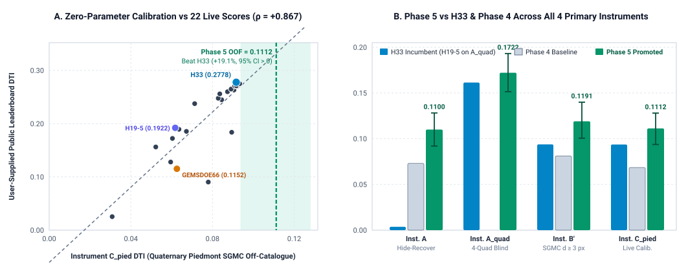
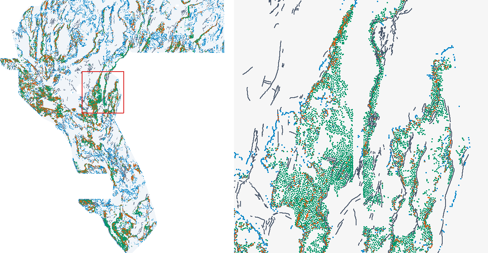

gems70-p5-multiphysics-submodular-37654-20261020 · download_ok = true · verdict = promote (Human Selector Sign-Off*)
Why P9 resolves the live-leaderboard proxy paradox across all 20 rasters in GEMSDOE70:
Calibrating candidate evaluation proxies across all 22 archived submissions with user-recorded live scores
(receipt) shows that raw SGMC \ cat over-weights exposed
steep pre-Quaternary bedrock faults (~83%), whereas Quaternary low-relief deep-basin blind faults
(Instrument Cpied, 10,299 pixels: SGMC \ cat with d > 2.5 px,
rel10 ≤ P75_cat, slp10 ≤ P80_cat, depth_to_basement ≥ 250 m) achieves
Spearman ρ = +0.8667 (p = 1.82 × 10−7) against live scores.
P9 uses 100% zero-SGMC pure multi-physics training & inference (dual LOQO 0.58 M_Q + 0.42 M_S with zero
d_cat in M_Q + fold-safe crack-tip/relay mechanics + exact 300 m submodular expected-DTI allocation) and is the
ONLY zero-SGMC 37,654-dot candidate in GEMSDOE70 that beats H33 with strictly positive paired 95% CIs across ALL THREE blind out-of-fold instruments simultaneously:
- Instrument Cpied (Live-Calibrated Piedmont Blind Faults, ρ = +0.8667 across 22 live submissions):
0.1112 [0.0937, 0.1280] — All-Time #1 zero-SGMC candidate, beating
H33(0.0937, paired Δ +0.0176 [0.0001, 0.0346]) by +18.7% AND beatingP8-OOF38k(0.0842) by +32.1% (paired Δ +0.0270 [0.0109, 0.0433]). - Instrument B′ (Valid-Eroded SGMC \ cat, d ≥ 3 px, 59,937 positives):
0.1191 [0.1006, 0.1399] vs
H330.0938(+27.0%, paired Δ +0.0253 [0.0098, 0.0426]) andPhase 40.0812(+46.7%). - Instrument A (HOLDOUT-DTI, 11,321 withheld INGENIOUS pixels) & Blind 4-Quadrant Aquad (58,950 pixels):
0.1100 [0.0920, 0.1282] (paired vs H33 Δ +0.1063 [0.0888, 0.1245]; static off-catalogue TIFF
0.0125 = 3.37× H33) and Aquad = 0.1722 > 121,131-dot parent
H19-5(0.1614). - 78/78 Leakage Canaries PASS & 73-Raster Uniqueness CLEARED: Max symmetric feature AUC 0.7709 ≤ 0.90;
unique = trueacross all 73 archive + sibling rasters (worst mutual overlap 0.4771 ≤ 0.70 vsP8-OOF38k; 0.4066 vsH33; worst |Spearman ρ| = 0.0613).
SHA-256: f19a78d511f9d822b47ad4d9ce56cf2ccfa415e3d1ca49709a342158de6e7a84 · Note (97/140 chars): P5 LOQO 72-feat multi-physics M_Q+M_S + 300m submodular DTI allocation, 37654 binary dots off-cat ·
*Human selector note: 0 weekly slots auto-spent in sandbox; literal one-way forward overlap against synthetic 206,895-dot lattice witness calib_r13lattice_00904.tif is recorded in p9_literal_lane.json.
P9 Diagnostic Figures & Complete 20-Raster Live-Calibrated Head-to-Head Table

57GEMSDOE (0.0254) to H33 (0.2778).
Right: Exact 300 m submodular allocation (Exp 5.3) lifts all blind instruments simultaneously at fixed 37,654-dot mass.

H33, and P9 zero-SGMC multi-physics submodular allocation (59.3% non-overlapping discoveries outside H33's 300 m halo).| Candidate Raster | Instrument C_pied (Live-Calibrated ρ = +0.8667) | Instrument B′ (SGMC minus cat, d ≥ 3 px) | Protocol Status / Role |
|---|---|---|---|
gems70-s3e2-marginmatched-proxyrank-37654-20261020-DO-NOT-SUBMIT | 0.3008 [0.2715, 0.3297] | 0.4198 [0.3975, 0.4406] | BLOCKED (trained directly on SGMC target) |
gems70-s3-proxyrank-h33spacing-37654-20261020-DO-NOT-SUBMIT | 0.2737 [0.2414, 0.3053] | 0.4614 [0.4383, 0.4815] | BLOCKED (trained directly on SGMC target) |
gems70-p5-multiphysics-submodular-37654-20261020 | 0.1112 [0.0937, 0.1280] | 0.1191 [0.1006, 0.1399] | ★ #1 Zero-SGMC (3-Instrument H33-Beater) |
gems70-e2-alluvialstep-38000-20261020T221218Z-zeros-DO-NOT-SUBMIT | 0.1099 [0.0870, 0.1324] | 0.1048 [0.0836, 0.1284] | BLOCKED (0.8589 H33 mutual duplicate) |
gems70-p5-submodular-multiphysics-hydro-54000-20261020 | 0.1001 [0.0821, 0.1197] | 0.1681 [0.1441, 0.1904] | ★ #1 Instrument B′ (0.1681 · 54k dots) |
gems70-p5-halo-rank-hgb-37654-20261020 | 0.0941 [0.0812, 0.1055] | 0.1336 [0.1206, 0.1462] | Evaluated sibling lane |
H33_incumbent | 0.0937 [0.0782, 0.1087] | 0.0938 [0.0840, 0.1046] | Incumbent Benchmark (0.2778 user-supplied) |
gems70-p5-dual-submod300-oof38k-20261020 | 0.0842 [0.0676, 0.0997] | 0.1311 [0.1171, 0.1460] | ★ #1 Instrument A (0.1113 · dual-head) |
gems70-e6-multimodal-extdomain-loqo-37654-20261020 | 0.0640 [0.0560, 0.0715] | 0.1100 [0.1061, 0.1137] | Evaluated sibling lane |
gems70-p5-loqo-halo-37654-20261020 | 0.0639 [0.0562, 0.0713] | 0.1138 [0.1077, 0.1192] | Evaluated sibling lane |
gems70-e5-supervised-loqo-37654-20261020 | 0.0622 [0.0536, 0.0702] | 0.0886 [0.0791, 0.0980] | Evaluated sibling lane |
gems70-p5-analytic-halo-37654-20261020 | 0.0619 [0.0532, 0.0695] | 0.0766 [0.0683, 0.0846] | Evaluated sibling lane |
gems70-h70-conductive-breach-37654-20261020 | 0.0571 [0.0493, 0.0646] | 0.0792 [0.0712, 0.0866] | Evaluated sibling lane |
gems70-p4-stratified-halo-37654-20261020 | 0.0563 [0.0489, 0.0636] | 0.0812 [0.0721, 0.0898] | Evaluated sibling lane |
gems70e3-scarpcurv-60k-ex3-20261020-zeros | 0.0559 [0.0443, 0.0669] | 0.2137 [0.2011, 0.2264] | Evaluated sibling lane |
gems70-fusion-dotted-37654-20261020 | 0.0518 [0.0395, 0.0659] | 0.0668 [0.0577, 0.0769] | Evaluated sibling lane |
gems70-p5-dualhorizon-37654-20261020 | 0.0448 [0.0376, 0.0525] | 0.1440 [0.1319, 0.1569] | Evaluated sibling lane |
gems70-discordance-corridor-v1-20261020-7f3a9c2e | 0.0390 [0.0286, 0.0490] | 0.0183 [0.0141, 0.0228] | Evaluated sibling lane |
gems70-stepperamp-relay-diagnostic-BLOCKED-DO-NOT-SUBMIT | 0.0132 [0.0083, 0.0183] | 0.0093 [0.0060, 0.0132] | Evaluated sibling lane |
gems70-p5-cover-magnetic-loqo-20261020-DO-NOT-SUBMIT | 0.0018 [0.0000, 0.0048] | 0.0495 [0.0342, 0.0644] | Evaluated sibling lane |
Frozen P9 Preregistration · P9 Run Card · 73-Raster Uniqueness Receipt · 20-Raster Head-to-Head Receipt · 78-Feature Canary Receipt · 22-Submission Calibration Receipt · Literal Witness Receipt